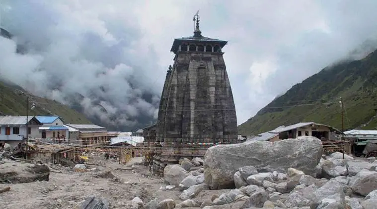

What is soil erosion?
Soil erosion is the gradual removal of topsoil from the Earth's surface. Caused by natural forces and human activities, it threatens ecosystems and fertile land. Affecting agriculture, water quality, and biodiversity, soil erosion demands urgent attention and conservation.
Real Incidents of Soil Erosion

Uttarakhand Floods (2013)
Heavy rainfall caused massive soil erosion, landslides, and floods in Uttarakhand, resulting in significant loss of life and property.

Kerala Floods (2018)
Intensive rainfall led to severe soil erosion, landslides, and floods in Kerala, affecting thousands of people and causing widespread destruction.

Assam Floods (2022)
Soil erosion along the Brahmaputra River caused flooding in several districts of Assam, displacing thousands of people and affecting agricultural land.
Levels of Severity of Soil Erosion in India
| Severity of Erosion | Annual Range (tonnes per hectare) |
The Share of Total Affected Area (%) | Annual Loss of Soil (million tonnes) |
|---|---|---|---|
| Slight | ≤ 5 | 24 | 401 |
| Moderate | 5-10 | 43 | 1406 |
| High | 10-20 | 24 | 1610 |
| Very High | 20-40 | 5 | 640 |
| Severe | 40-80 | 3 | 666 |
| Very Severe | ≥ 80 | 1 | 255 |
| Total | 4978 | ||
Geospatial Modelling of Soil Erosion and Risk Assessment in Indian Himalayan Region